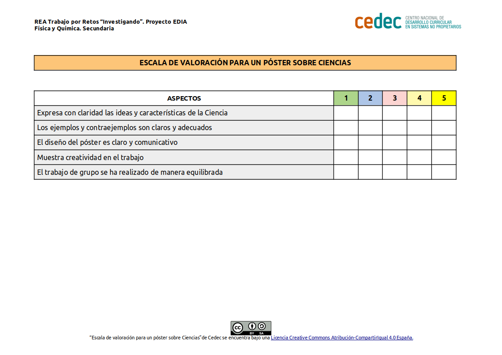

El termómetro lo utilizamos para medir nuestra temperatura, especialmente cuando estamos enfermos, pero últimamente debido al coronavirus se ha convertido en una herramienta habitual en nuestras vidas ya que sirve como filtro para detectar la presencia del Covid-19.
Este objeto cotidiano forma parte de nuestras vidas pero quizás no sabías qué data del siglo XVI. La historia del termómetro nace de la mano de Galileo Galilei que construyó un instrumento sensible a la variación de temperatura.

Vamos a investigar la evolución del termómetro a través de la historia y mediante pósteres representaremos los descubrimientos más significativos.
El termómetro a través de la historia
- Duración:
- Dos sesiones
- Agrupamiento:
- Individual, pequeño y gran grupo
En esta tarea consta de dos actividades:
- Una lectura científica cooperativa con la técnica de aprendizaje cooperativo "El saco de dudas".
- Una investigación documental sobre el termómetro a partir de cuatro sobres.
Para hacer la lectura científica utilizaremos una técnica de aprendizaje cooperativo “El saco de las dudas”: Realizaremos primero la lectura individualmente, luego, en el grupo pequeño, intentaremos resolver las dudas surgidas. Las dudas que queden sin resolver las escribiremos y las meteremos en el saco de las dudas para resolverlas en el grupo grande.

Después de realizar la lectura científica, el profesor o profesora repartirá cuatro sobres con unas fechas determinadas. Cada grupo, utilizado las fechas encontradas en su sobre, hará una investigación documental sobre el termómetro que posteriormente expondrá en un póster científico. Los pósteres se dispondrán en las paredes de la clase ordenados por orden cronológico.
Actividad 1: El termómetro y su historia
Nos informamos individualmente, mediante una lectura científica cooperativa. Finalizada la lectura, en grupo pequeño resolvemos las dudas surgidas y finalmente aclaramos las dudas que han quedado sin resolver en el grupo de clase, empleando la técnica cooperativa del "saco de las dudas". Para esta actividad emplearemos una sesión de clase.

Para realizar la lectura científica utilizamos como referencia el siguiente texto "La controversia sobre quién inventó el termómetro" publicado en el ABC.
¡Empecemos a investigar!
El termoscopio
El termómetro, ese instrumento cotidiano, deriva su nombre de los vocablos griegos thermos, que significa calor, y metron, medida; literalmente es un instrumento que sirve para medir la temperatura. El primero en idearlo, al menos algo parecido, fue Galileo Galilei (1564-1642) en el año 1592 y su funcionamiento consistía en medir la temperatura ambiental. Para ello diseñó un dispositivo en forma de varilla, con una parte superior terminada en bulbo y una inferior que se introducía en una jarra llena de agua.
Los cambios en la temperatura del aire contenido en la ampolla ejercían un efecto de succión sobre la columna de agua situada abajo, de forma que ascendía. A este invento se le bautizó con el nombre de «termoscopio».
Del termoscopio al termómetro
Por sorprendente que pueda parecernos el invento de Galileo Galilei carecía de escala graduada y, además, tenía el inconveniente de que la altura que alcanzaba el líquido dependía de la presión atmosférica. En 1611 el médico veneciano Santorius Santorio añadió una escala numérica, de forma que la temperatura pudiese cuantificarse.
Además, este galeno italiano, uno de los fundadores de la medicina experimental, imaginó un uso adicional, poder medir la temperatura corporal. De esta forma apareció el primer termómetro clínico de la historia.
Inicialmente siguió empleándose el término acuñado por Galileo y el vocablo «termómetro» no hizo su aparición hasta 1624 cuando el jesuita Jean Leurechon lo empleó por vez primera en un tratado de termodinámica.
El primer termómetro de mercurio
En el siglo XVII Fernando II de Medici –el Gran Duque de la Toscana- decidió introducir aguardiente coloreado en el interior del termómetro, en lugar de agua. El beneficio que se obtenía era doble, por una parte era más sensible que el agua a la dilatación y, por otra, no se congelaba con tanta facilidad.
Newton también tomó cartas en el asunto y propuso en 1701 una escala en donde el cero era el punto de congelación del agua y el doce la temperatura normal de un «inglés sano». Trece años después, el holandés Gabriel Fahrenheit (1686-1736) sustituyó el aguardiente por mercurio y además introdujo una nueva escala de medición, la Fahrenheit.
El neerlandés propuso el cero para la temperatura más baja que pudo conseguir, con una mezcla de hielo, agua y sal; y noventa y seis como referencia para el calor humano. Asignó aleatoriamente el valor 32 a la temperatura de congelación del agua y el 212 a la de ebullición.
Más adelante, ya estamos en 1742, otro físico, Anders Celsius, no contento con esta escala tan compleja planteó graduar los termómetros entre cien (punto de congelación del agua) y cero (punto de ebullición). Al año siguiente Jean-Pierre Christin propuso la conveniencia de invertir estos puntos, la escala resultante fue la que todos conocemos.
El primer termómetro de bolsillo
Los primeros termómetros clínicos estaban fijados a la pared, medían unos treinta centímetros de longitud y se tardaba, por término medio, unos veinte minutos en medir la temperatura corporal. En 1867 el médico inglés Clifford Allbutt revolucionó el mercado al diseñar uno de quince centímetros que medía la temperatura corporal en tan sólo dos minutos. Fue todo una revolución.
En cuanto a la escalas, con la Revolución Francesa se bautizó como «centígrada» a la escala ideada por Celsius, la cual pasó denominarse a partir de 1948 como «escala Celsius». La inestimable aportación de Jean-Pierre Christin quedó en el olvido.
Actualmente en la Unión Europea se han retirado del mercado los termómetros de mercurio debido a su efecto nocivo para el medio ambiente y la salud. Se han sustituido por los termómetros electrónicos que funcionan gracias a un termistor (un sensor resistivo de temperatura).
El saco de las dudas
Una vez que hemos terminado la lectura, en el grupo pequeño resolvemos las dudas encontradas. Las dudas que nos queden sin resolver se escribirán en un folio que doblaremos y meteremos en el saco de las dudas para que, posteriormente, en el grupo de clase, las vayamos sacando de una en una del saco de las dudas y comentando entre todos.
Actividad 2: Los sobres sorpresa
El profesor o profesora reparte los siguientes sobres entre los grupos de clase. Cada sobre contiene unas fechas determinadas, cada grupo investigará la evolución del termómetro según la época que le haya tocado y realizará un póster sobre la historia del termómetro referido a esa época. Finalmente los pósteres se expondrán en las paredes de la clase ordenados cronológicamente.
Elaboración de los pósteres:
- Los pósteres se pueden realizar en formato digital, empleando por ejemplo la aplicación "Miro" o "Canva"
- Para elaborar el póster en cada época tenemos explicar de forma esquemática la evolución del termómetro en la época correspondiente, utilizando imágenes en la explicación.
- La actividad la realizamos en grupo pequeño durante una sesión de clase.
| GRUPO | SOBRE | FECHAS |
|
VERDE |
1592-1611 | |
|
NARANJA |
1624-1700 | |
| AZUL | 1800-1990 | |
|
ROJO |
1990-2020 |
Evaluación y reflexión
Una vez que hemos finalizado la tarea, es un buen momento para reflexionar en nuestro diario de aprendizaje. Algunas sugerencias pueden ser:
- ¿Qué he aprendido?
- ¿Qué me ha sorprendido más de todo el proceso? ¿Por qué?
- ¿He cambiado alguna idea previa? ¿Cuál?
- ¿Qué me ha resultado más difícil? ¿Por qué?
Evaluación
La tarea se evalúa con la siguiente Escala de valoración para un póster sobre Ciencias (descargar en formato editable odt y en pdf)
